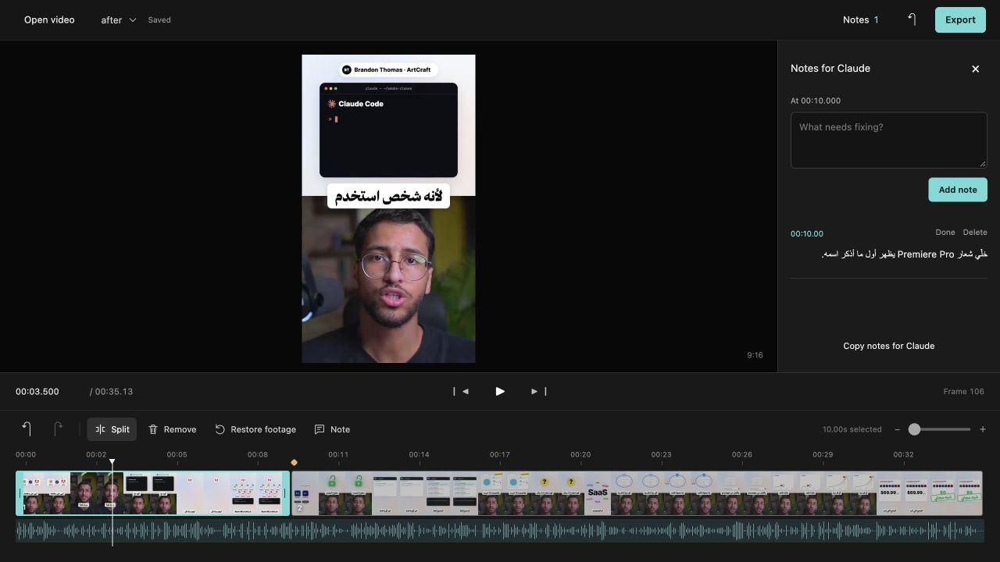

من فيديوهات عبدالله
ريلز عبدالله.
نسخ أصلية ومونتاج بأساليب مختلفة.
النسخة الأولى وريل Dots من أعمال عبدالله السابقة. النسخة البديلة أُعدّت بمهاراته الشخصية الحالية. قوالب الموشن القابلة للتعديل موجودة هنا أيضاً.
اللمسات الأخيرة لك
شاهد. حدّد. صحّح.
تنقّل إطاراً بإطار، اترك ملاحظة في وقتها، قصّ لحظة أو استرجعها، ثم صدّر إلى المجلد الذي تختاره.
الملاحظات يقرأها مساعدك في المحادثة التالية؛ لا تشغّل الذكاء الاصطناعي تلقائياً.

من الخام إلى التصدير
العمل الكبير للمساعد.
مهارتك الحالية تبقى معك.
المشروع يضيف مساحة للمراجعة.
- الفيديو والتعليمات
أعطِ الخام لمساعدك. أضف مرجعاً أو تسجيل شاشة إذا احتجت.
- المونتاج الكامل
قصّ وموشن وكابشن وصوت، حسب تعليماتك والأدوات المتاحة.
- المراجعة والتصدير
افتح النتيجة بالمحرر. صحّح التفاصيل أو أرسل ملاحظاتك للمساعد.
نزّل. افتح. ابدأ.
نزّل ZIP، افتح المجلد في Claude Code أو Codex، ثم أرسل:
جهّز هذا المشروع وثبّت المهارات الموجودة فيه بدون استبدال مهاراتي الحالية. افحص Python وFFmpeg ثم افتح المحرر.
تحتاج Python وFFmpeg، ووصولك الخاص إلى Claude Code أو Codex. الموشن له تجهيز اختياري. دعم Windows وLinux يحتاج اختباراً إضافياً.